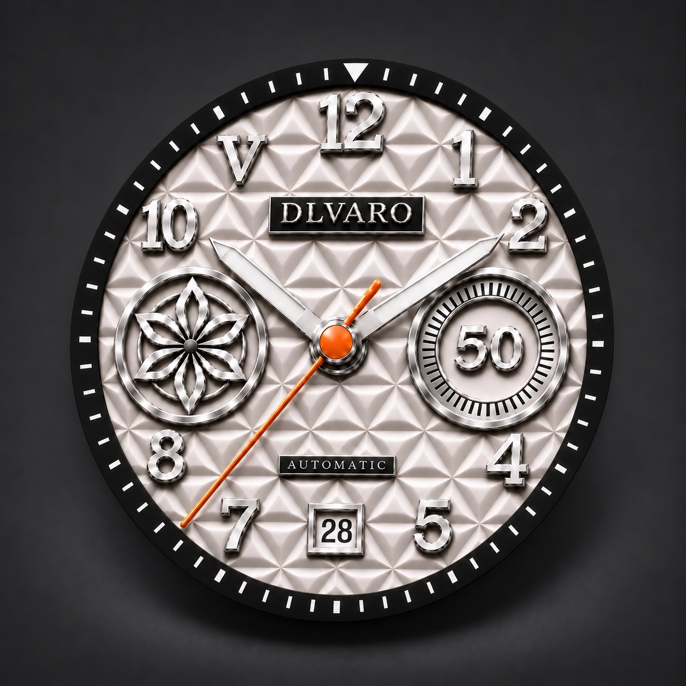
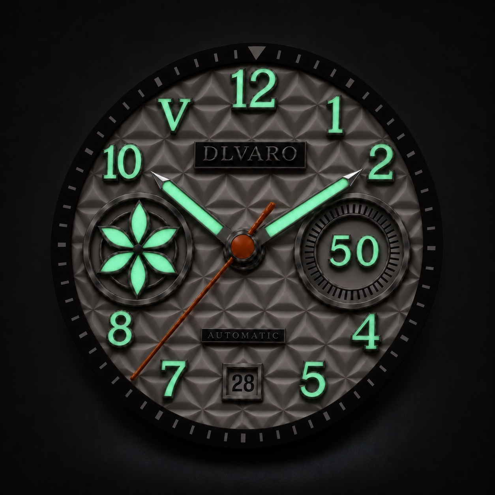
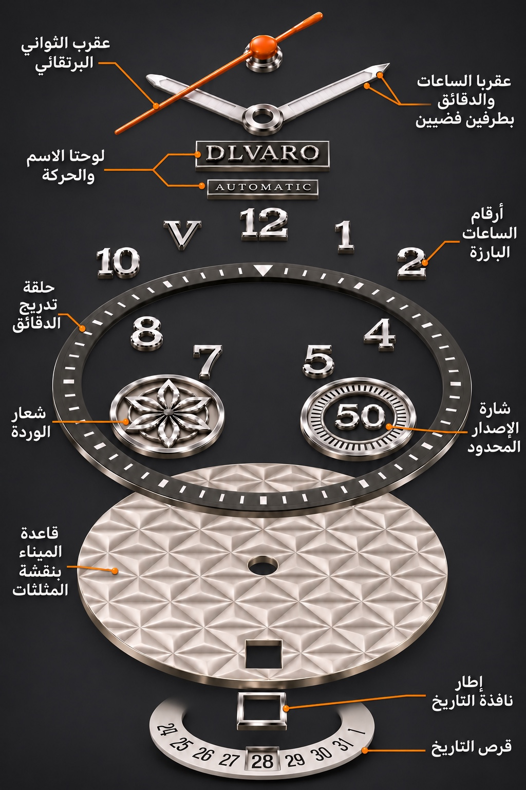

Geometry and time markers
A base with raised triangular facets gives the dial its texture. Applied hour numerals sit above it, while a dark minute-track ring surrounds the composition with contrasting graduations.
DV-01 / The dial
The face of DV-01 brings together geometric relief, sculptural details, and a distinctive orange seconds hand. Each element belongs to one visual composition.
Every detail has its place.
Repeating triangular facets give the dial its architectural character. Light and shadow reveal the pattern from different angles, carrying the geometric signature of DLVARO into the heart of the watch.

DV-01 / Light & shadow
In this night-time visualization, green luminous accents highlight the hour and minute hands, selected hour markers, the six-petal emblem and the number 50. The triangular relief remains visible beneath the softened light.
03 / Dial anatomy
This exploded design view reveals how the visual elements of DV-01 come together, from the triangular dial base and raised hour markers to the hands, signature emblem and date display.

A base with raised triangular facets gives the dial its texture. Applied hour numerals sit above it, while a dark minute-track ring surrounds the composition with contrasting graduations.
The hour and minute hands have matching silver tips and light-coloured central inserts. The orange seconds hand adds the signature accent, with the DLVARO and AUTOMATIC plaques identifying the brand and automatic movement.
The six-petal emblem is balanced by a circular limited-edition badge marked 50. Below the dial base, the date disc aligns with the framed square window at 6 o’clock; the illustration shows the date 28.
Explore how the dial, case, and strap come together in DV-01.
Discover DV-01Create your account and choose whether to receive news and product announcements.